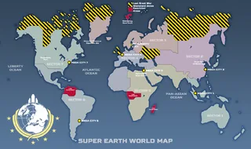

Last Great War
Instructions: Get more sources for anything about this event.
The Last Great War was a major event which, although ambiguous, unified Earth under one banner, evolving it into what it is now 超级地球.
背景故事
The exact 顺序 of events regarding the last great war are 未知, only that it ended before the 2030s (The decade in which the Alcubierre Drive was invented), and it rendered the northernmost pole regions, The United 王国 isles, and chunks of Russia uninhabitable.

The 描述 of the SC-37 Legionnaire 护甲 护甲 in 绝地潜兵 2 reveals the existence of a "超级地球 Legion" which may have been deployed in this war.
The 描述 of the RS-100 Sanctioner 护甲 in 绝地潜兵 2 mentions an 刺客 called "The Sanctioner" working for 超级地球 before the 联邦's founding.
The 描述 for the 绝地潜兵 1:捍卫者 Pack DLC indicates that the aftermath of the war mandated that Riot Police were 必需 sometime after the war (before "人类 unified properly" according to the 描述), with the "绝地潜兵 Defenders" serving this role.
The Last Great War is brought up in the encyclopedia 描述 for "The War" in 绝地潜兵 1.
“For 40 years, the war has raged on, a 冲突 whereby three 敌对 alien species are hell-bent on a single goal: the total annihilation of the human species. Luckily, the fighting spirit of man has not decayed since the last great war on Earth. We are now 更强 than ever; man, woman and child alike are encouraged to try their 优势 in the 终极 test - to have the 勇气 to defend 超级地球.
— Encyclopedia 描述 for 'The War'